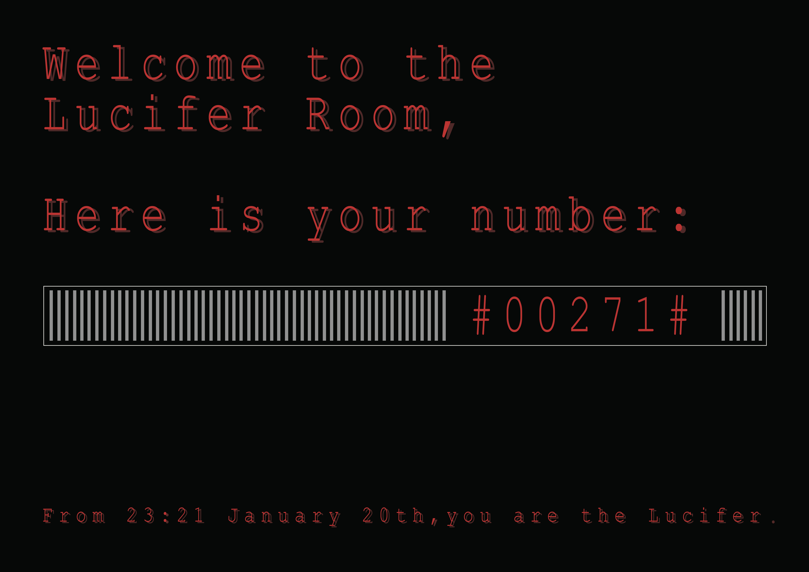
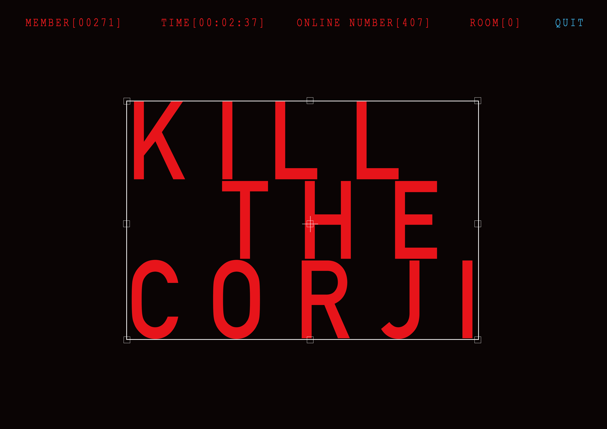
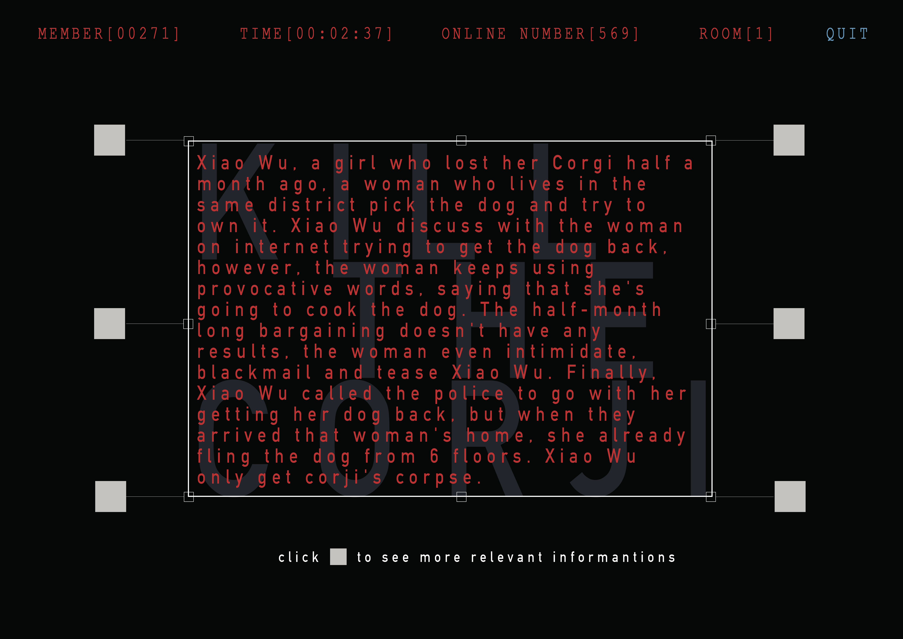
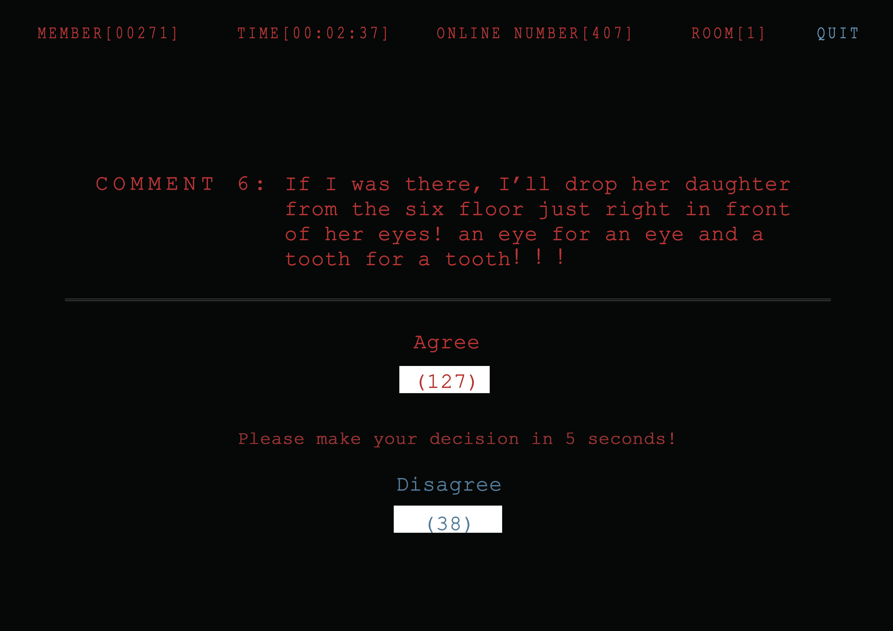
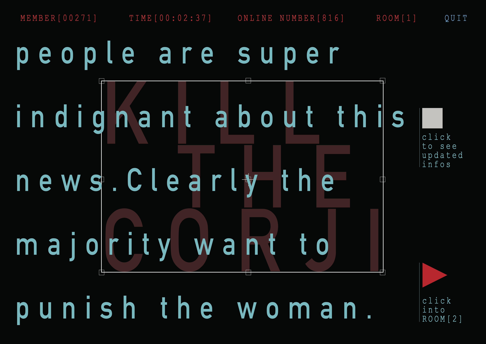
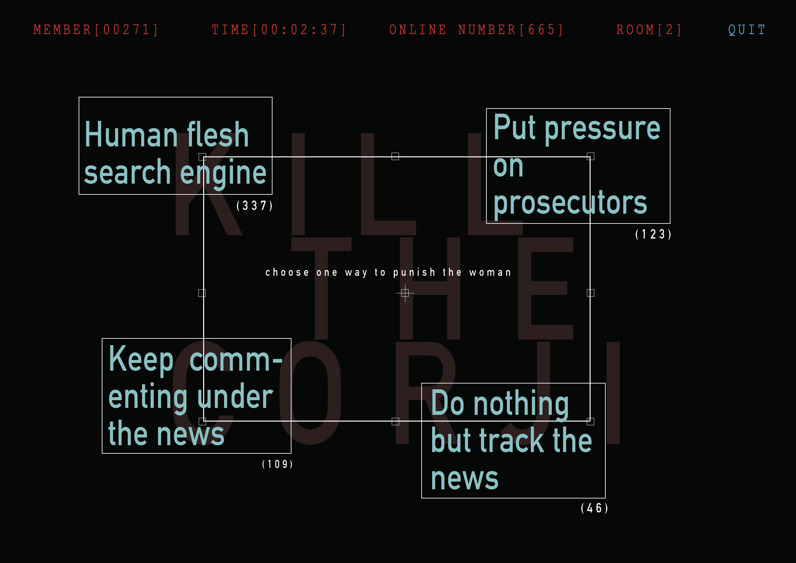
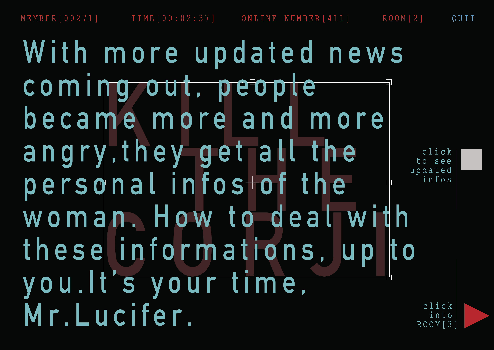
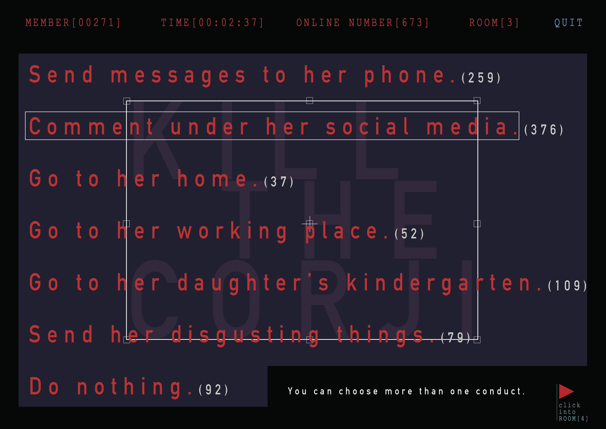
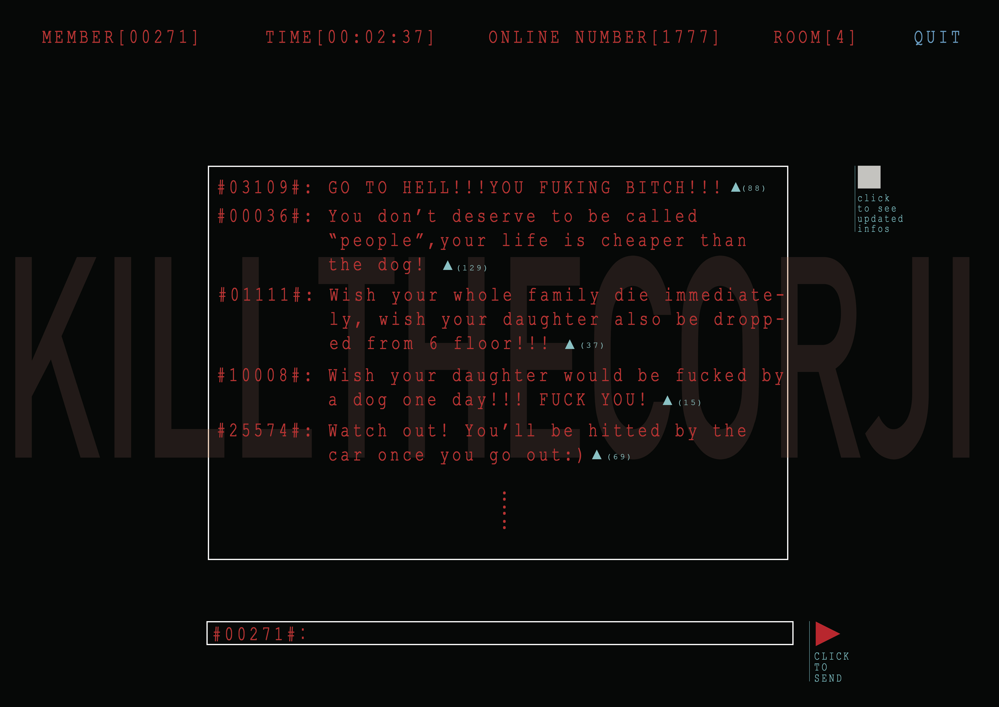

In this online game, you’ll play the role of The Great Lucifer, you can execute your punishment on whoever the “bad person” is. In each game chapter, you’ll read a story or news with several stages changing in 12 hours. You make your own judgement and decision, hundreds of punishments waiting for you to explore and implement. In this cyber space, you only exist as a random number which generated by computer, and it will change every chapter. So the whole game is totally anonymous. No surveillance, no any worries, just perform your duty.
The
Lucifer
Room
scroll↨to check